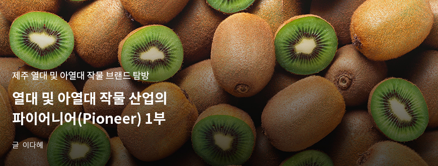
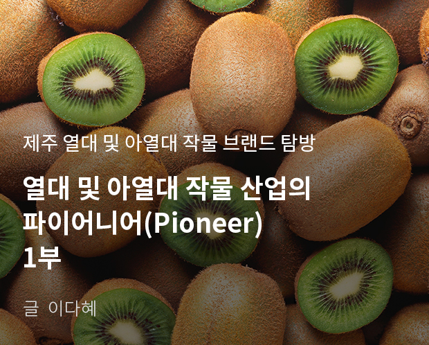
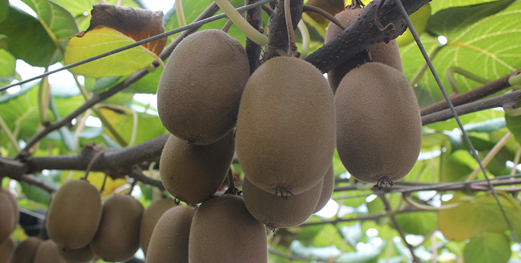
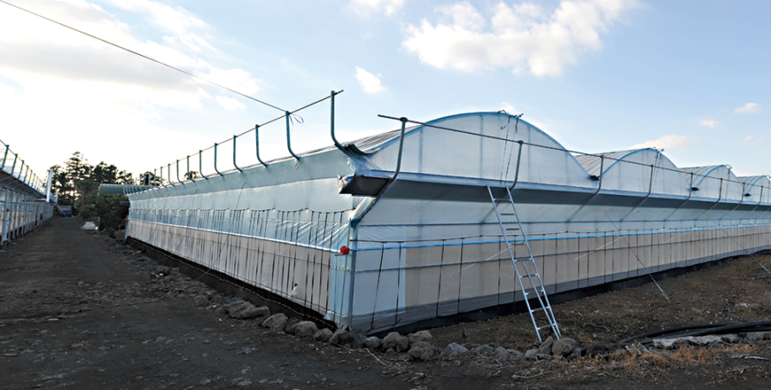
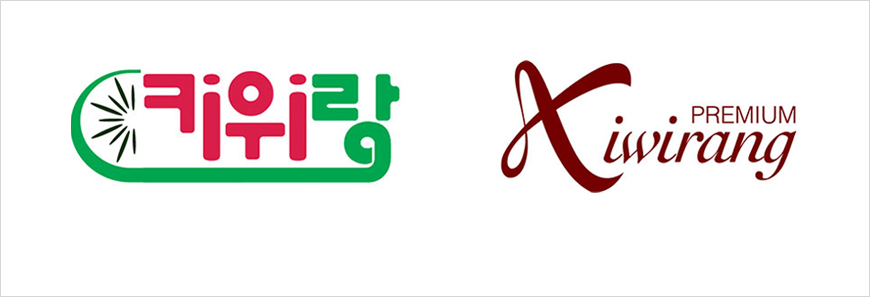
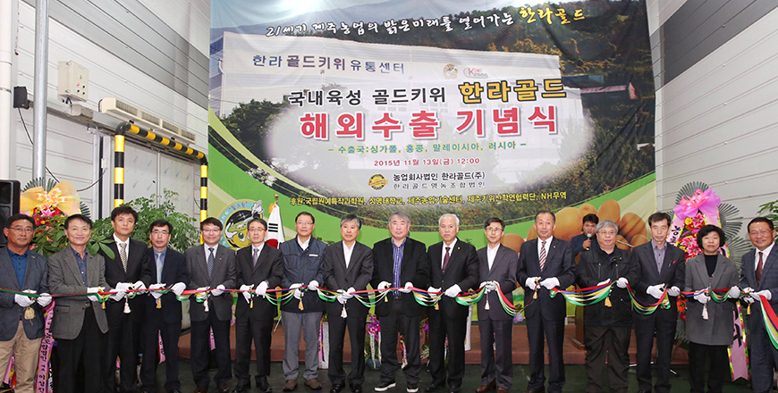

기획취재콘텐츠
- Home
- 제주라이프
- 기획취재콘텐츠
열대 및 아열대 작물 산업의 파이어니어(Pioneer) 1부새로운 글




제주 열대 및 아열대 작물의 역사는 국내 토종 작물에 비해 역사가 짧다. 그만큼 실험적이며 동시에 가능성을 가졌다. 실험적 작물을 재배하고 이를 산업화하기 위해 도전을 멈추지 않는 농가와 혁신가가 있기에 제주의 열대 및 아열대 작물 산업이 가능했다. 전문가의 연구, 제주도의 지원을 바탕으로 새로운 시장을 개척하는 개척자, 열대 및 아열대 작물 산업의 파이어니어(Pioneer)를 만났다.
세계 최고 키위 브랜드를 향해, 한라골드영농조합법인
키위는 다래과 덩굴성 낙엽과수로 국내에서 대중적으로 인지도가 높으며 소비가 많은 대표적인 아열대 과수다. 20세기 중국에서 뉴질랜드로 전해져 오늘날 키위로 불리게 되었으며 중국, 이탈리아, 칠레, 프랑스 등 각국에서 생산되고 있다. 키위는 연평균 기온이 14℃ 이상인 지역에서 안전하게 재배가 가능해 국내는 남부지역을 중심으로 재배되고 있다.

- ⓒ한라골드영농조합법인 -
제주도에서는 일부 농가를 중심으로 1974년 키위 재배를 시작했다. 1994년까지 노지재배가 주요 재배 방식이었는데, 병충해와 태풍 피해로 시설재배를 시작했다. 2004년 이후 뉴질랜드 제스프리사의 골드키위 계약재배와 국내산 골드키위 지원정책 등으로 시설키위 재배 면적이 증가하며 제주 지역에서 키위는 감귤에 이어 제2과수로 자리 잡고 있다. 제주 키위 생산 면적은 2001년부터 2018년까지 188%, 농가 호수는 237% 증가했으며, 2018년 기준 조수입은 31,119백만 원으로 기타 과수 전체 조수입 49,009백만 원의 64%에 달한다. 키위가 제주에서 제2과수로 자리 잡기까지는 품종개발, 재배기술 역량 확보, 농가 조직화를 통한 수익성 제고 등 다양한 노력이 있었기에 가능했다.
- 한라골드영농조합법인 유통센터 전경 ⓒ한라골드영농조합법인 -
한라골드영농조합법인은 2008년 9명의 회원으로 시작했다. 현재는 230여 개 농가가 조합원으로 있다. 한라골드영농조합은 키위 종자부터 소비자의 식탁에 오를 키위 상품화까지 전 과정에 걸쳐 농가와 상생 구조를 만들고 있다. 한라골드영농조합법인에서 주로 생산하는 키위 품종은 한라골드와 제시골드다. 한라골드와 제시골드는 농촌진흥청 온난화대응연구소와 제주농업기술원이 협력해 국내 생육환경에 맞춰 개발한 국산 키위 품종이다. 조합은 2010년 한라골드키위, 2014년 스위트 골드 키위 품종에 대한 전용실시권을 농촌진흥청과 체결해 생산 및 판매권을 확보하고 2013년에는 6,600㎡ 규모의 꽃가루 센터를 준공해 수꽃가루를 안정적으로 공급할 기반을 조성했다. 한라골드영농조합법인에서 농가에 공급하는 꽃가루는 연간 100kg이 넘는다. 2017년에는 한라골드영농조합법인에서 사용하는 꽃가루 전량을 완전 국산화하는 데 성공해 농가의 경영비 경감에 도움을 주고 있다.

- 한라골드영농조합 꽃가루 센터 전경 ⓒ한라골드영농조합법인 -
- 한라골드영농조합 선과장 내부 전경 ⓒ한라골드영농조합법인 -
고품질 키위 품종을 공급하며 동시에 농가의 생산 역량 확대 및 기술 상향 평준화를 위해 다양한 프로그램을 운영한다. 농가 간 기술 정보를 교류할 기회를 마련하고 농가 컨설팅과 키위 재배 역량 강화 교육을 실시한다. 2012년에는 조합원 및 임원이 직접 뉴질랜드 현지에 방문해 교육을 받고 키위 전문가를 국내로 초청해 농가 교육 프로그램을 운영하기도 했다.
- 뉴질랜드 방문 교육 현장 ⓒ한라골드영농조합법인 -
이렇게 생산된 한라골드영농조합법인에서 생산된 고품질 키위는 전량 공동선별·공동출하를 통해 판매하며 대금은 공동계산을 원칙으로 한다. 한라골드영농조합법인에서 직접 개발한 국산 키위 브랜드 ‘키위랑’으로 일관된 고품질의 키위를 소비자의 식탁에 전달하기 위해 자체적인 선별 및 품질관리 기준을 구축하고, 국내 및 해외 수출국 잔류농약기준표 등을 제작해 농가에 배포한다.

- 키위랑(좌), 프리미엄 키위랑(우) 로고 ⓒ한라골드영농조합법인 -
우수한 종자를 유지하며, 생산과 유통 전 과정에서 상향 평준화를 위한 노력을 기울인 결과 한라골드영농조합법인은 고품질 과일로 인정받으며 2010년 우수품종상, 으뜸농산물전시회 동상 등을 수상한데 이어 2014년 국립농산물품질관리원으로부터 농산물우수관리시설로 지정되었다. 같은 해 제주대학교로부터 농산물우수관리인증을 받기도 했다.
국내는 물론 해외시장에서도 그 우수성을 입증하고 있다. 2015년 10월 싱가포르 수출을 시작으로 홍콩, 말레이시아, 일본 등에 키위를 수출하고 있다. 한라골드영농조합법인은 2019년 산 키위로 총 148 톤, 약 65억의 수출 실적을 올렸는데, 이는 전국 키위 수출량의 38%, 수출액의 51%에 달하는 수치다. 특히, 열대 및 아열대 과수 주산지인 동남아시아에 키위 수출 실적을 올렸다는 점에서 상징적이다.

- 한라골드키위 해외수출 기념식 현장 ⓒ한라골드영농조합법인 -
해외시장에 제주산 키위의 우수성을 입증하고 수출 경쟁력을 확보하기 위해 한라골드영농조합법인은 GLOBAL G.A.P. 인증 획득을 위한 전용 영농관리대장을 보급하고 인증대상농가에 방문 컨설팅과 전체 농가 대상 교육을 실시했다. 또한, 국가 별 선호하는 키위 품종과 포장 단위 등을 조사해 적극적으로 반영했다. 이러한 노력을 바탕으로 수출실적을 올리고 수출 기업으로서 역량을 강화한 결과 한라골드영농조합법인은 ‘2020년 수출선도조직 육성사업’에 신규 지정됐다.
한라골드영농조합법인은 농촌진흥청이 개발한 수출전략품종인 한라스위트를 무기로 해외 수출시장을 더욱 확장할 계획이다. 현재 수출되는 동남아시아 국가 외의 다른 국가와 인도 등 다양한 해외시장의 문을 두드려 뉴질랜드를 넘어 세계 최고의 키위 브랜드로 성장하는게 목표다.
이전글
다음글